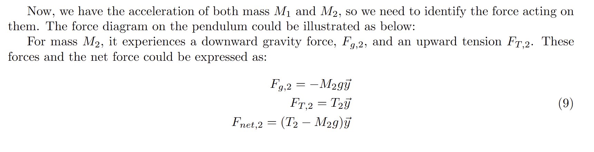
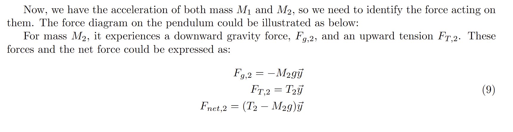

A looping pendulum is a fascinating physical phenomenon involving a slender rope with a heavy object at one end and a lightweight object at the opposite end. When suspended from a horizontal fixed support and released, the lighter object moves due to gravity, influencing the motion of the heavier object. Under specific conditions, the lighter object can cause the heavier one to wind around the support, preventing it from dropping to the ground. This intriguing physics problem was featured in the 2019 International Young Physicists Tournament due to its straightforward setup and impressive dynamics, which captured my interest.
This paper aims to analyze the dynamics of a looping pendulum using Newtonian mechanics. Additionally, it will investigate the trajectory of the lighter object through numerical simulations and compare these predictions with experimental results. Furthermore, it will explore the relationship between the mass ratio of the objects and the length of the rope after the heavier object comes to rest.
 
